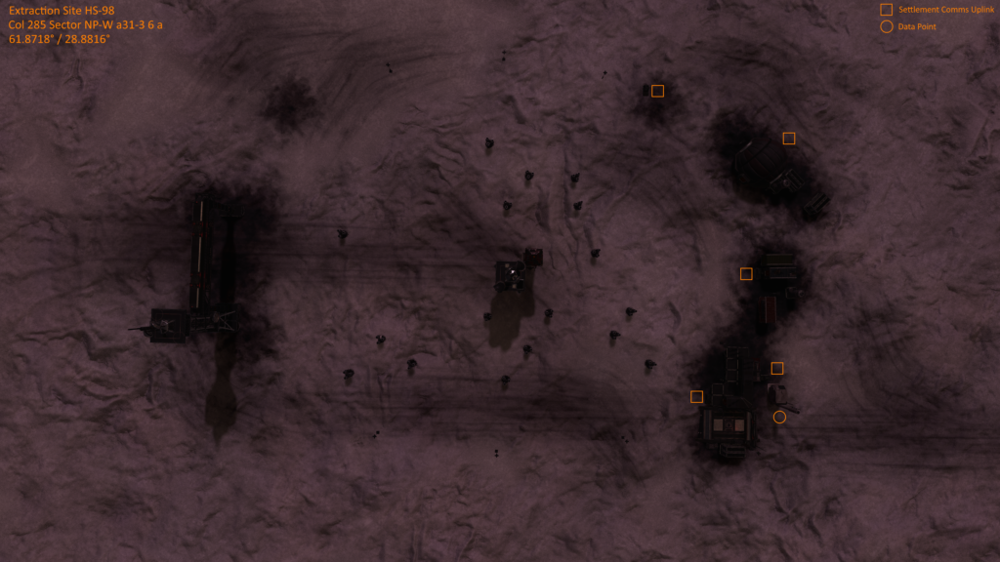

Extraction Site HS-98 is an abandoned settlement in the Col 285 Sector NP-W a31-3 system on body 6 a, at 61.8717, 28.8815 (in Live/4.0) or at 35.3454, -137.6611 (in Legacy/3.8).
It appears to have first been found by Commander GO13BT who made a video of the location in 2018.
The location of this site can be found by following the three nearby listening posts located in:
Col 285 Sector SF-N c7-2 / Col 285 Sector UB-T a33-4 / Col 285 Sector AX-S a33-0
ANOMALOUS SIGNAL DATA
[Note for 3.8] Codex displays values for 4.0, it should read: long:-137.66104
…Transponder Signal BMC-642-A Detected…
Matches signal detected at listening posts: (col 285 sector ub-t a33-4, col 285 sector ax-s a33-0)
Approximate Signal Range: 32-34 LY
There’s something not quite right about this place…… long:28.9297 ……if we can get some power back online, maybe…..
…Signal Lost…
ANOMALOUS SIGNAL DATA
[Note for 3.8] Codex displays values for 4.0, it should read: lat:35.345505
…Transponder Signal BMC-642-B Detected…
Matches signal detected at listening posts: (col 285 sector sf-n c7-2, col 285 sector ax-s a33-0)
Approximate Signal Range: 23-25 LY
There’s something not quite right about this place…… lat:61.8295 ……if we can get some power back online, maybe…..
…Signal Corrupted…
ANOMALOUS SIGNAL DATA
…Transponder Signal BMC-642-C Detected…
Matches signal detected at listening posts: (col 285 sector sf-n c7-2, col 285 sector ub-t a33-4)
Approximate Signal Range: 29-32 LY
There’s something not quite right about this place…… 6 a ……if we can get some power back online, maybe…..
…Carrier Signal Lost…

Commander Hammersmith has reported hearing whispers while exploring the site, keep your ears open.
Around the settlement there are five Settlement Comms Log Uplink points, scanning them gives some clues to how Survey Team 84 met their horrific fate.
SURVEY TEAM 84 1/5
Survey Team 84 reporting in.
Planetary survey completed and mineral analysis complete. Sending the data to Control.
We’ve found something else. A settlement. Must be a couple of hundred years old at least.
Requesting permission to check it out.
SURVEY TEAM 84 2/5
Survey Team 84: Sit Rep
It’s as we thought, this place is old and abandoned, no one has been here for a long long time. There is something not quite right about this place, there is no sign that anyone has ever been here, but someone must have built this place, someone must have lived here. There should be some sign of life.
All systems are shut off and the habs need to be pressurized. There is no breathable air and it’s like a deep freeze in there.
If we can get some power back online, maybe we can get this place operational and access the base logs and find out what this place is.
SURVEY TEAM 84 3/5
Survey Team 84: Sit Rep
It’s taken a couple of days, but we now have power. Had to borrow some parts from the ship: Co2 scrubbers, some power units. The habs now have atmosphere and we can get to work finding out who built this place.
There are some things to report. Some of the crew have reported seeing things, hearing things, systems starting up on their own, things moving around. We think there might be someone still here. I know how that sounds, but there could be a larger structure under the settlement. I’ve sent a team to check out the substructure to make sure.
Will report when we have more information.
SURVEY TEAM 84 4/5
Survey Team 84: Sit Rep
Someone is definitely messing with us. There has to be a survivor living here.
Multiple crew members have reported seeing someone running through the corridors in multiple buildings. There must be some kind of tunnel system or underground conduits running between them.
The thing is, every time we think we’ve got them cornered they just vanish. Not a trace.
That’s not the only thing. We’ve had an incident.
Baker, one of my best men, decided to take a walk outside… without his suit. I’ve flown with him for over 10 years. I can’t believe he would do this. It’s like something led him to this death. We’ve checked the vid logs, he just got up and walked into the airlock, but I think he was talking to someone. It sounded like he said, “Out here, waiting for you, leave”.
I’m calling it, we’re leaving as soon as we can get the ship prepped.
SURVEY TEAM 84 5/5
Survey Team 84: Sit Rep
The ship’s gone. Simons and Kent with it. Some kind of fault in the engine, when they initiated the test fire the whole thing went up.
It’s not what we thought. I can’t explain it. There is something in here with us. Not a someone… something.
These voices are not… they are in our heads. This place is…
Do not come here. Do not send help. There is something here that I can’t explain, but if you come here you will die.